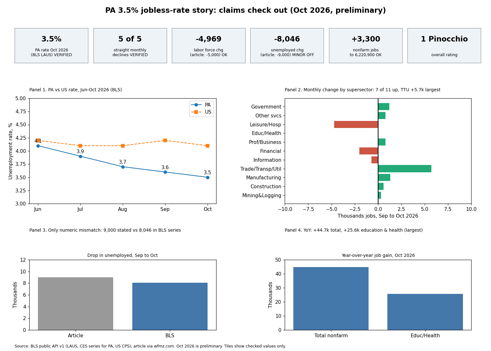

Fact check: PA unemployment 3.5%

Summary: the report is accurate; one small figure is off (1 Pinocchio)
Pennsylvania's October 2026 unemployment rate is 3.5%, down 0.1 point from September's 3.6%, and this matches the BLS series. It is the fifth straight monthly decline (Jun 4.1, Jul 3.9, Aug 3.7, Sep 3.6, Oct 3.5). Nearly every other number checks against BLS data: the US rate (4.1%, down from 4.2%), labor force (6,658,402; change -4,969, which rounds to the article's -5,000), nonfarm jobs (6,220.9k, +3.3k on the month, +44.7k on the year), seven of 11 supersectors up, trade/transportation/utilities largest (+5.7k), and education and health the largest annual gain (+25.6k).
- Discrepancy: the article says resident unemployment fell by 9,000. The BLS series gives 240,525 to 232,479, a drop of 8,046 (about 8,000). The level (232,479) is the lowest since July 2023 (231,959), as stated. I could not read the L&I release, so I cannot say whether the 9,000 is the department's own figure.
- Record-low claim, with a caveat: current BLS data show the previous low as 3.5% (June and July 2023). L&I's 2023 releases called 3.4% the record, before annual revision. The "matching the record" claim is correct on the current series. A reader comparing old press releases would see 3.4%.
- Misleading context (mild): the headline credits Gov. Shapiro by attaching "under Gov. Shapiro". A state rate is not attributable to a governor, and the prior low (2023) was also in his term. The monthly series is model-based and the October figure is preliminary and revisable.
- Not checkable: the article text itself was only available as a summary from the fetch tool, so exact quotes could not be matched. The L&I October 2026 release did not turn up in search.
Claim table
| Claim | Result |
|---|
| Rate 3.5%, down 0.1 | Verified (LASST420000000000003) |
| Fifth straight decline | Verified |
| Matches record low | Verified on revised series (3.5% Jun/Jul 2023); older releases said 3.4% |
| US 4.1%, down 0.1 | Verified (LNS14000000) |
| Labor force -5,000 to 6,658,000 | Verified (-4,969; 6,658,402) |
| Unemployed -9,000, lowest since Jul 2023 | Level and "lowest since" verified; change is -8,046, minor mismatch |
| Nonfarm +3,300 to record 6,220,900; +44,700 YoY | Verified; record not tested against full history |
| 7 of 11 supersectors up; TTU largest; Educ/Health +25,600 YoY | Verified (CES supersector series) |
Confidence: high on the BLS-matched values; medium on the record-low framing and the 9,000 figure.
Sources
- BLS Public Data API v1, PA LAUS series LASST42000000000000{3,4,5,6}, CES SMS42 total and supersectors, CPS LNS14000000: https://api.bls.gov/publicAPI/v1/timeseries/data/
- Article (summary via fetch): https://www.wfmz.com/news/area/pennsylvania/pa-unemployment-rate-drops-to-3-5-matching-all-time-record-low-under-gov-shapiro/article_4a88f95c-fc45-48d9-bf40-f0304e57c35f.html
- PA Dept. of Labor & Industry newsroom (2023 and Sep 2026 releases, via search): https://www.pa.gov/agencies/dli/newsroom